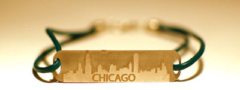

This project was part of the class Real Products, Real Markets at Olin College of Engineering. This project was to design, prototype, market, and sell a product in four weeks. The requriement for the project was that the product had to be chemically etched into metal. We used Adobe Illustrator to create our designs.
Our product was a line of bracelets with city skylines on them. Our goal was to help people build their connection to places they love by offering major cities. We also allowed people to place customized orders for other cities. We also expanded into creating bracelets for different groups on and off campus.
When we had a design we liked we used a vinyl cutter to see how it looked on paper. After we made sure our design worked we compiled a sheet with all of the ordered bracelets. This file was then sent to a company to chemically metal etch the bracelets. You can also check out our facebook page for more photos.